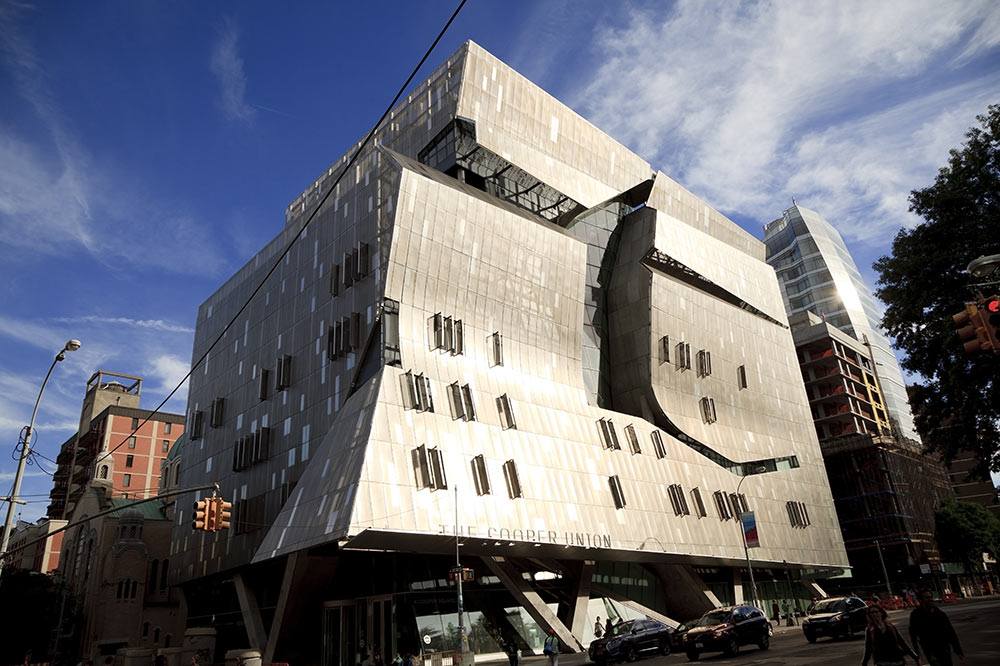

Childhood

I grew up in Queens New York my whole life, Queens is known as the most Diverse City in the world, which is one of the main reasons I enjoy living in Queens. Growing up in Queens I learned to enjoy many different things and that knowing people from different backgrounds will only help you grow as a person. Growing up I've always known I enjoyed Technology which grew my passion for engineering and technology. I also grew to love playing video games as a young age and enjoyed other hobbies such as watching anime and playing sports.
Future & Goals

As a High School in senior I believe that this time is a important and crucial time for me to follow my passion and follow my goals. I believe that my experience in internships such as in League Apps Internship and my CTE program that I am taking would help me in the future to get a job that would let me enjoy and gain money from my passion. However, a current goal for me would have to be to get into one of my top colleges such as The Cooper Union, Stevens Institution, NYU, and Clarkson. I would like to get into these schools and study Electrical Engineering, although it is gonna be diffcult I believe that being an Engineering is the major I would like to study.

Hobbies

I believe that having Hobbies are very important, I believe that having a hobby would help me calm down when I feel like I have been working hard. Some hobbies I enjoy are playing Basketball, Soccer, Watching anime like JJK, AOT, Blue Lock, Kuruko No Basket, Mob Psycho 100, and currently I am watching One Piece. I also enjoy playing Video Games during my spare time on my PC, Some games I play are Valorant, Destiny 2, Roblox, Brawlhalla, Overwatch 2, and many others. These are my three main hobbies. However, some other hobbies I enjoy are Rock Climbing, Working Out, Listening to Music, and playing with my Cat, Chucky.